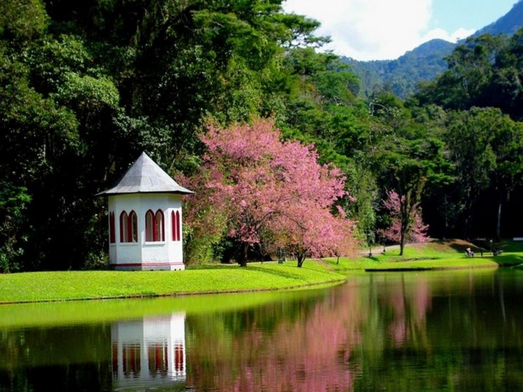
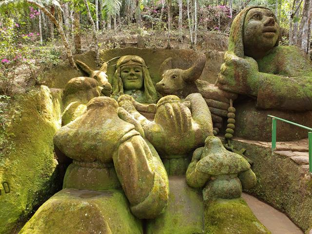
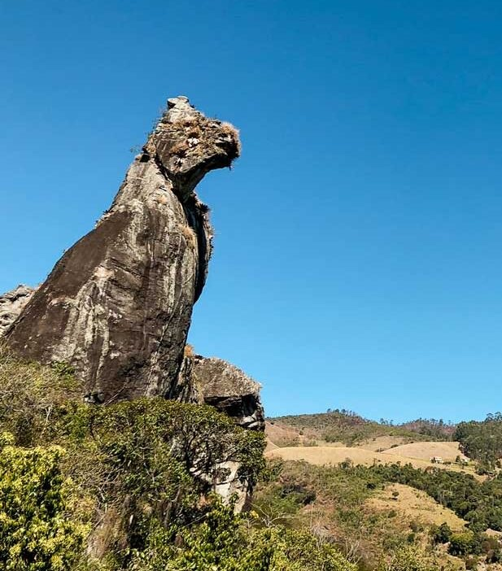

<!DOCTYPE html>
<html lang="pt-br">
<head>
    <meta charset="UTF-8">
    <meta http-equiv="X-UA-Compatible" content="IE=edge">
    <meta name="viewport" content="width=device-width, initial-scale=1.0">
    <link rel="stylesheet" href="./style.css">
    <link rel="preconnect" href="https://fonts.googleapis.com">
    <link rel="preconnect" href="https://fonts.gstatic.com" crossorigin>
    <link href="https://fonts.googleapis.com/css2?family=Lato&display=swap" rel="stylesheet">
    <title>Cidade de Nova Friburgo</title>
</head>
<body>
 </body>
 </html>
<div class="site">
    <div class="cabecalho">
        <nav class="navegacao">
            <h1>Bem-Vindo a Nova Friburgo</h1>
            <a href="#home"><b>Home</b></a>
            <a href="#curiosidades"><b>Curiosidades</b></a>
            <a href="#video"><b>Video</b></a>
        </nav>
    
    </div>
    <div class="fundo"></div>
    <div class="resumo"id="home">
    <main>
        <h1>Nova Friburgo</h1>
        <p><b>Nova Friburgo é um município brasileiro do estado do Rio de Janeiro,
           Região Sudeste do país.
           Sua população estimada em 2021 é de 191.664 habitantes. Até 1755, a região da atual Nova Friburgo era habitada por índios goitacases,puris e portugueses.
            Em 16 de maio de 1818, o Rei Dom João VI,  sentindo a necessidade de estreitar os laços de amizades com os povos germânicos a fim de obter apoio contra o Império Francês,
           propôs uma colonização planejada, a fim de promover e dilatar a civilização do Reino do Brasil. 
           Baixou, então,um decreto que autorizou o agente do Cantão de Fribourg, na Suíça, Sebastien Nicolas Gachet, 
           a estabelecer uma colônia de cem famílias suíças na Fazenda do Morro Queimado, no Distrito de Cantagalo, 
           localidade de clima e características naturais semelhantes às de seu país de origem.</b>
            Entre 1819 e 1820,  a região foi colonizada por 265 famílias suíças,  totalizando 1 458 imigrantes. 
           Foi batizada pelos suíços com o nome de Nova Friburgo, em homenagem à cidade de onde partiu a maioria das famílias, 
           Fribourg ("Friburgo" em português, "Fribourg" em francês, "Freiburg" em alemão, 
           idioma em que foi criado o nome da cidade a partir das palavras "frei" - livre e " burg" - castelo/forte), no Cantão de Fribourg.  
           <b>Foi, também, o primeiro município no Brasil colonizado por alemães, tendo estes imigrantes, ao todo 456, chegado à cidade em 3 de maio de 1824,
           três meses antes que imigrantes alemães chegassem à cidade de São Leopoldo, no Rio Grande do Sul. 
           Nova Friburgo foi a primeira colônia não lusitana a ser fundada no Brasil em caráter oficial.</b>
           As principais atividades econômicas são baseadas em: indústria metalúrgica, moda íntima, olericultura, caprinocultura e indústria 
           (têxteis, vestuário e do setor metal-mecânico) e turismo. 
           É também a cidade mais fria do estado.
        </p>
        </main>
    
    </div>
    
    <div class="curiosidades"id="curiosidades">
        <h1>Curiosidades</h1>
        <article>
        <h1>Nova Fiburgo Country Club</h1>
        </img>
        <p>O Nova Friburgo Country Clube é um dos mais tradicionais clubes de Nova Friburgo e um dos pontos turístico localizado na zona sul da cidade.
           Possui uma área de 225 mil metros quadrados,dos quais 80 mil fazem parte de um jardim,tendo sido projetado pelo paisagista francês Glaziou,
           o mesmo idealizador do projeto da Quinta da Boa Vista na cidade do Rio de Janeiro.
           Foi construído para ser a residência de Antonio Clemente Pinto - o Barão de Nova Friburgo,
           considerado o quarto homem mais rico do Brasil no período imperial,
           durante a segunda metade do século XIX,
           sendo que o seu acervo arquitetônico guarda semelhanças daquela época.
           Naquela época chamavam a residência de Chácara do Chalé por causa da arquitetura do imóvel,
           mas tarde quando a residência foi passada como herança a seu filho eles a chamavam de Parque São Clemente,
           pois o seu filho era Conde de São Clemente.
           Em 1883, recebeu a visita do imperador Dom Pedro II.
           No ano de 1913 o imóvel foi vendido pelos sucessores do Barão de Nova Friburgo a Eduardo Guiinle, integrante da tradicional família Guinle,
           mas tarde o seu filho, Carlos Guinle,
           cedeu a mansão do Parque São Clemente que seu pai havia comprado para ali ser instalado o Nova Friburgo Country Clube.
        </p> 
        <a href="https://www.nfcc.com.br/"target="_blank">Para Saber Mais Clique Aqui!</a>
    
    </article>
    <article>
      <h1>Jardin do Nêgo</h1>
      </img>
      <p>Esculturas moldadas por meio de uma técnica diferente,compõem o jardim do Nego na localidade Campo do Coelho. 
         O jardim é criado e mantido por Geraldo Simplício, conhecido como Nego. 
         O artista veio do estado do Ceará e mora sozinho no local a mais de 30 anos. Atualmente, são 17 esculturas feitas de barro. 
         O local é um famoso ponto turístico da cidade, foi atingido pela tragédia de 2011 e chegou a ficar fechado durante meses. 
         Na época, quatro obras foram danificadas e uma desapareceu, possívelmente carregada pela enxurrada. Depois dos estragos causados pela chuva, 
         Geraldo aproveitou para criar detalhes que deixaram as esculturas ainda mais belas. É o caso da escultura de uma pastora, 
         que segura um terço, de uma tartaruga e de uma mulher, que ganhou realce após a restauração. Nego faz as esculturas com as próprias mãos, 
         utilizando apenas o barro. Para fazer os detalhes, ele usa os dedos como ferramenta
        </p> 
        <a href="https://quantocustaviajar.com/blog/jardim-do-nego-em-nova-friburgo/"target="_blank">Para Saber Mais Clique Aqui!</a>  
    
    </article>
    <article>
        <h1>Parque Ecológico Cão Sentado</h1>
        </img>
        <p>A Pedra do Cão Sentado é um monumento natural considerado símbolo da cidade de Nova Friburgo, 
           é uma das mais notáveis formações rochosas do parque de Furnas do Catete, 
           situada à margem da Rodovia Nova Friburgo - Bom Jardim, encontra-se em extensa área, com altitude máxima em torno de 1.111 metros. 
           É um conjunto de grutas e blocos de rochas superpostas que criam formas deslumbrantes. 
           O ponto mais elevado é a Pedra do Cão Sentado, formação que se assemelha a um cão de guarda, com 100m de altura. 
           Para atingi-lo o visitante percorre aproximadamente 1 km, ultrapassando 12 pontes e rústicas escadas.
           Esse ponto turístico foi originado a partir de eventos erosivos que desgastaram a rocha e levaram à formação da feição que hoje se assemelha a um cão.
        </p>
        <a href="https://www.vamostrilhar.com.br/aventuras/roteiro-da-trilha-da-pedra-do-cao-sentado-nova-friburgo-rj/"target="_blank">Para Saber Mais Clique Aqui!</a>
    </article>
    
    <div id="video">
    
    <iframe width="560" height="315" src="https://www.youtube.com/embed/Hc5KbSw05oI" 
    title="YouTube video player" frameborder="0" allow="accelerometer; autoplay; clipboard-write; 
    encrypted-media; gyroscope; picture-in-picture" allowfullscreen></iframe>
    <iframe width="560" height="315" src="https://www.youtube.com/embed/N5K_qjMbsNI" 
    title="YouTube video player" frameborder="0" allow="accelerometer; autoplay; clipboard-write; 
    encrypted-media; gyroscope; picture-in-picture" allowfullscreen></iframe>
    <iframe width="560" height="315" src="https://www.youtube.com/embed/UmumJ6rj3D0" 
    title="YouTube video player" frameborder="0" allow="accelerometer; autoplay; clipboard-write; 
    encrypted-media; gyroscope; picture-in-picture" allowfullscreen></iframe>
    <iframe width="560" height="315" src="https://www.youtube.com/embed/jQVi5c8-nXY" 
    title="YouTube video player" frameborder="0" allow="accelerometer; autoplay; clipboard-write; 
    encrypted-media; gyroscope; picture-in-picture" allowfullscreen></iframe>
    
    </div>
    
</div>
    
    
    <div class="direitosAutorais"> 
    <footer>
    <b> Autor:Moises Rosa Carriello</b>
    <a href="https://github.com/Ximira69" target="_blank">
    </a>
    <a href="https://www.linkedin.com/in/moises-r-048b98107" target="_blank">
        </a>
    </footer>
    
    </div>
            
    

</div>

</body>
</html>